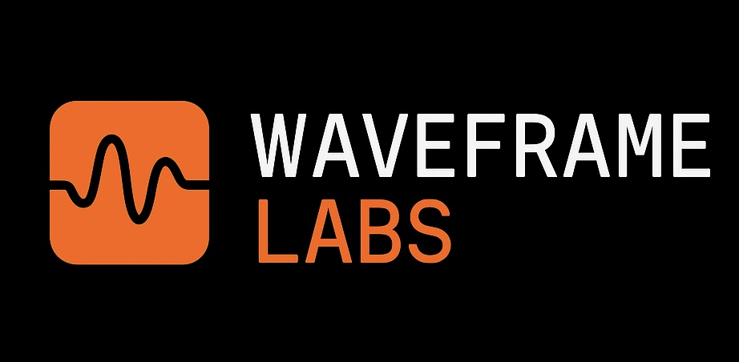

Neurotransparency Doctrine
Epistemic foundations: why cognitive integrity is required and how failures propagate.
Read Doctrine DOI pendingARI defines the governance, epistemic rules, and methodological law for all scientific AI conducted under the Aurora ecosystem.
Learn MoreThe six-layer institutional structure: epistemic foundation → governance → methodology → enforcement → case studies → tooling.
Hierarchy OverviewWaveframe Labs develops reproducible AI–human workflows, governance systems, and deterministic enforcement engines.

We publish the Aurora Workflow Orchestration (AWO) method, maintain the CRI-CORE enforcement layer, and drive frontier research including Waveframe v4.0 and the Societal Health Simulator.
Epistemic foundations: why cognitive integrity is required and how failures propagate.
Read Doctrine DOI pendingThe enforceable compliance standard for verifiable AI–human collaboration.
RepositoryRole-structured, audit-first scientific workflows.
Overview RepositoryDeterministic enforcement and run-level provenance.
Overview RepositoryCommercial governance tooling for regulated environments.
RoadmapThe complete six-layer institutional architecture.
OverviewEntropy–action, observer-dependent cosmology with falsifiable predictions.
RepositoryInteractive sociotechnical modeling environment.
Repository Live DemoGovernance logs, templates, schemas, metadata policies.
Org ProfileHand-edited snapshot. Full history in meta/SITE_LOG.md.
I’m Shawn C. Wright, an independent researcher developing deterministic AI–human workflows, reproducible scientific tooling, and epistemic governance systems. My work spans cosmology, systems science, and workflow design — all published openly and reproducibly. Contact: swright@waveframelabs.org · ORCID: 0009-0006-6043-9295